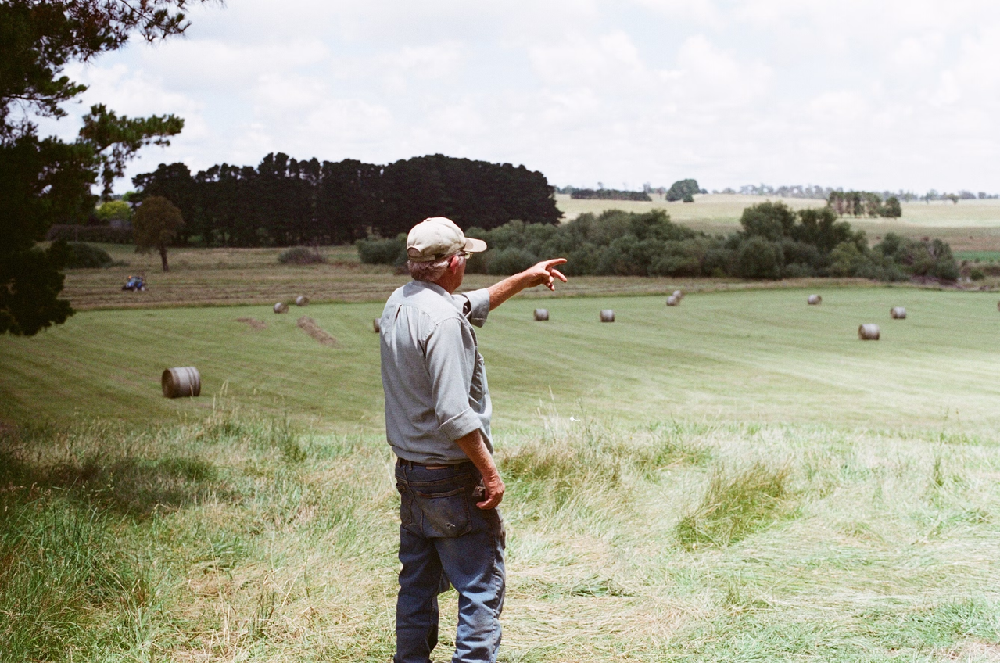

SHOP OUR SEASONAL
SELECTION
Updated every week

New produce is added continuously as time goes by and the seasons change.
Browse our selectionUpdated every week
New produce is added continuously as time goes by and the seasons change.
Browse our selectionAll your questions answered
New produce is added continuously as time goes by and the seasons change.
Go to chatFram is a circular service that ensures your kitchen is always stocked. Browse our seasonal selection, choose your items, and place your order online.
Once your order arrives, unpack the produce and store it. Enjoy fresh food from our partner farms at home.
Ready to restock? Grab the containers from your last order and scan the QR codes with our simple web app to reorder your favourites.
When we deliver your new order, simply leave your empty containers outside. We’ll swap them, clean them thoroughly, and reuse them for future deliveries.